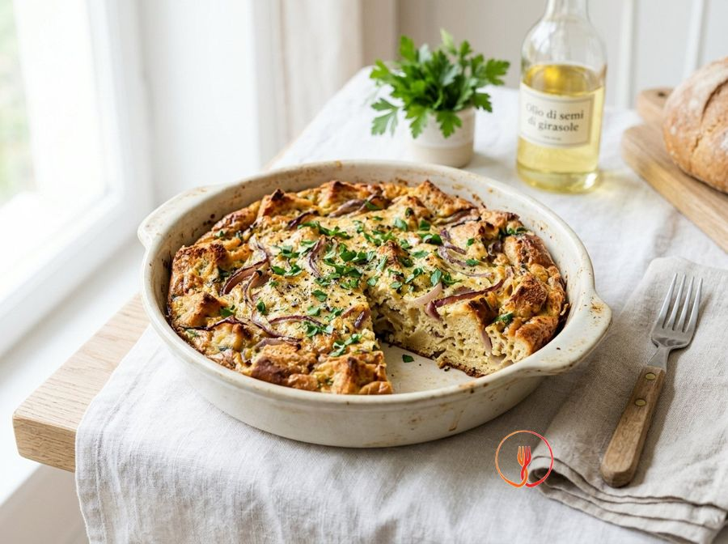

Frittata di Pane Raffermo e Cipolle Rosse
Una ricetta di recupero della tradizione contadina europea che evita gli sprechi alimentari. Il pane assorbe l'uovo diventando soffice, quasi come una torta salata.
Ingredienti
- Pane raffermo200 g
- Uova6 pz
- Cipolle rosse2 pz
- Latte100 ml
- Prezzemolo fresco1 ciuffo
- Olio di semi di girasole30 ml
- Sale e pepeq.b.
Allergeni
Uova, Latte, Glutine
Procedimento
- Taglia 200 g di pane raffermo a cubetti di circa 1,5 cm e mettili in una ciotola capiente, irrorandoli uniformemente con 100 ml di latte a temperatura ambiente. Lascia riposare il pane per circa 15 minuti, rigirandolo ogni tanto con un cucchiaio affinché ogni pezzetto assorba il liquido in modo omogeneo. Il risultato finale deve essere un pane morbido ma che mantenga ancora la sua struttura, evitando che diventi una poltiglia informe. Il consiglio dello chef: se il pane è molto duro, prolunga l'ammollo di 5 minuti, ma strizzalo bene prima di unirlo alle uova per non annacquare il composto.
- Prendi le 2 cipolle rosse, mondale eliminando la buccia esterna e affettale finemente a rondelle regolari con l'aiuto di un coltello ben affilato o una mandolina. In una padella antiaderente da circa 24-26 cm, versa la metà dell'olio di semi (15 ml) e un cucchiaio d'acqua, poi aggiungi le cipolle e un pizzico di sale. Cuoci a fuoco dolce per circa 10 minuti coprendo con un coperchio, finché le cipolle non risulteranno traslucide, dolci e completamente appassite. Il consiglio dello chef: l'aggiunta dell'acqua permette di stufare la cipolla senza bruciarla, mantenendo intatto il suo colore rubino e la sua digeribilità.
- Mentre le cipolle cuociono, rompi le 6 uova in una terrina pulita e aggiungi il prezzemolo fresco tritato finemente al momento, un pizzico di sale e una macinata di pepe nero. Sbatti il tutto con una forchetta o una frusta a mano per circa un minuto, cercando di incorporare un po' d'aria ma senza montare eccessivamente il composto. Dovrai ottenere un liquido giallo brillante, profumato e con il prezzemolo distribuito in modo uniforme. Il consiglio dello chef: evita di salare eccessivamente le uova se il pane di partenza è già molto sapido, come spesso accade con i pani caserecci.
- Prendi il pane ormai ammorbidito, strizzalo leggermente con le mani se vedi che c'è del latte in eccesso sul fondo della ciotola e uniscilo alle uova sbattute. Mescola delicatamente con un cucchiaio di legno o una spatola, facendo in modo che ogni cubetto di pane sia perfettamente avvolto dalla crema d'uovo. Lascia riposare questo composto per 2-3 minuti affinché i sapori inizino a fondersi prima di procedere. Il consiglio dello chef: non schiacciare il pane con troppa forza, altrimenti perderai la piacevole consistenza rustica che rende speciale questa frittata.
- Incorpora ora le cipolle rosse stufate, prelevandole dalla padella (che terrai da parte per la cottura finale), all'interno della ciotola con uova e pane. Amalgama il tutto con movimenti lenti dal basso verso l'alto per distribuire le cipolle in modo omogeneo in tutta la massa del preparato. L'impasto apparirà denso, ricco di consistenze diverse e molto profumato grazie alla dolcezza della cipolla cotta. Il consiglio dello chef: assicurati che le cipolle siano tiepide e non bollenti quando le unisci alle uova per evitare che queste inizino a rapprendersi prematuramente.
- Pulisci velocemente la padella usata per le cipolle con carta assorbente, versa i restanti 15 ml di olio di semi e scalda su fiamma media per un minuto. Quando l'olio è ben caldo ma non fumante, versa tutto il composto al centro della padella e livellalo rapidamente con una spatola per coprire l'intera superficie. Copri immediatamente con un coperchio e abbassa la fiamma al minimo, lasciando cuocere per circa 8 minuti. Il consiglio dello chef: muovi ogni tanto la padella con piccoli scatti laterali per assicurarti che la base non si attacchi e stia cuocendo uniformemente.
- Osserva i bordi della frittata: quando appaiono ben solidi e la superficie superiore è quasi rappresa ma ancora leggermente umida, è il momento di girarla. Appoggia un piatto piano grande sopra la padella, capovolgi con un gesto deciso e rapido, quindi fai scivolare delicatamente la frittata nuovamente nella padella dal lato non cotto. Questa operazione richiede fermezza per evitare che la frittata si rompa o che fuoriesca dell'uovo ancora liquido. Il consiglio dello chef: se hai timore di sbagliare, usa un coperchio piatto senza bordi, che facilita lo scivolamento della frittata.
- Completa la cottura dell'altro lato per altri 4-5 minuti senza coperchio, mantenendo la fiamma media per favorire la formazione di una crosticina dorata e croccante. La frittata sarà pronta quando risulterà soda al tatto e avrà un colore brunito invitante su entrambi i lati. Spegni il fuoco e lascia riposare la frittata in padella per 2 minuti prima di trasferirla su un tagliere o un piatto da portata. Il consiglio dello chef: il riposo finale è fondamentale perché permette all'umidità residua di ridistribuirsi, rendendo la fetta compatta al taglio e non gommosa.
Valori nutrizionali (stima)
| Per porzione (170 g) | Per 100 g | |
|---|---|---|
| Energia | 1435 kJ / 343 kcal | 844 kJ / 202 kcal |
| Proteine | 14.2 g | 8.4 g |
| Carboidrati | 33.2 g | 19.5 g |
| di cui zuccheri | 4.7 g | 2.8 g |
| Grassi | 16.6 g | 9.8 g |
| di cui saturi | 3.8 g | 2.2 g |
| Fibre | 2.5 g | 1.5 g |
| Sale | 1.2 g | 0.7 g |
Valori stimati con l'AI su dati medi CREA / USDA: sono indicativi e non sostituiscono il parere di un medico o di un nutrizionista.
Apri la ricetta nell'app per la lista della spesa, le schede ingredienti e i negozi vicini.